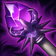

起手裝備
- 女神之淚

7.3f官方未列此英雄的一般技能／基礎能力調整；本輪按技能與位置需求複核評級、配置及裝備間接影響。
維持 A。高頻技能與擴散傷害可處理兵線及前排；射程較短，魔力與走位比站著打滿連招更重要。 完整可用；優勢與限制相抵，需要合理陣容及正常發育。
時光之杖 → 大天使之杖：前者提供生命與魔力成長；需要先承擔等待疊層的時間，後者補魔力成長與循環；未進化前不能預支後續效果。保留五件成裝與獨立鞋線；核心未成形時不把最後一格的保命／穿透能力當成已有。
相位衝擊：三次命中後用移速調整站位，沒有完成觸發前仍要留撤退工具。其餘選用附魔之帶、卓越、光輝披風、骨甲，依本頁輸出方式與生存需求配套。
閃現＋鬼步。閃現優先保留應對致命控制或完成有隊友跟進的擊殺；第二技能依對線用途使用，不替代走位。
本站獨立邏輯複核：以既有手機版技能／裝備／符文資料與已整理的7.3f官方差異推演；本輪不採用外站評級、勝率或推薦配置。 完成策略與配置一致性複核，不等於全部技能逐級數值、傷害計算及所有特殊互動已實測；既有缺證項目仍保留。
時光之杖：提早100金成裝，疊層生命與魔力增加；適合能等待成長的配置，仍須考慮當局交戰速度。
時光之杖 → 大天使之杖：前者提供生命與魔力成長；需要先承擔等待疊層的時間，後者補魔力成長與循環；未進化前不能預支後續效果。保留五件成裝與獨立鞋線；核心未成形時不把最後一格的保命／穿透能力當成已有。



五件成裝與鞋子分開列示；起手與核心是購買路線，不是額外佔用的成裝欄位。鞋子完成時機仍依對線壓力與回城金錢調整。


相位衝擊：三次命中後用移速調整站位，沒有完成觸發前仍要留撤退工具。其餘選用附魔之帶、卓越、光輝披風、骨甲，依本頁輸出方式與生存需求配套。


閃現＋鬼步。閃現優先保留應對致命控制或完成有隊友跟進的擊殺；第二技能依對線用途使用，不替代走位。
加點優先：Q > E > W
優先 Q > E > W，以超負荷承擔主要循環；初級取點仍依15級表保留完整基本技能，不把主升順序誤認成開局必須連點同一招。
技能會依額外魔力提高傷害，魔攻也會增加最大魔力，使法力與輸出互相成長。
其他基礎技能會重置超負荷冷卻並累積符文；已有兩層符文時施放一技即可獲得短暫跑速，不必命中才觸發。命中法術湧動目標時增傷，並彈向附近同樣帶標記的敵人。
指定目標受到魔法傷害與緩速；目標已有法術湧動標記時，控制才改為定身。
標記目標並讓超負荷產生擴散與增傷效果，是清線與連招的核心中繼技能。
開啟延遲傳送門，把範圍內友軍與士兵送往目標區域，適合轉線與繞後。
高頻技能與擴散傷害可處理兵線及前排；射程較短，魔力與走位比站著打滿連招更重要。
3技標記 → 2技定身 → 1技 → 3技 → 1技
先用三技掛上法術湧動再接二技定身，接續兩次一技刷新輸出。
3技 → 1技 → 2技 → 1技
不需要長時間站樁時，以三技接一技先打傷害，再用二技減速後補一技。
4技 → 3技 → 2技 → 1技
用大絕帶隊友繞後或轉移物件，落地後立刻定身優先目標。
一技補兵並控制耗魔，第一次回城盡早補女神之淚開始疊層，再完成時光之杖。對手能突進時保留E-W的定身，不把整套技能都交在兵線上。
時光之杖→大天使之杖→死亡之帽是先耐久後成長的單線方案；女神之淚必須提前疊，不是第二件才第一次購買。大天使優先是另一種節奏取捨，不作跨路硬性判錯。
後期保持中距離輸出，善用相位衝擊拉開近戰，再持續循環 E-Q。
高頻技能與擴散傷害可處理兵線及前排；射程較短，魔力與走位比站著打滿連招更重要。 名單僅作機制對位提示；優先看控制是否交掉、兵線／地形與隊友跟進，不宣稱勝率剋制榜。
對局名單是機制與分路判斷，不代表固定勝率；需同時看雙方熟練度、兵線與陣容。
本站巴龍路 A：魔力成裝後的推線與連續法術輸出能處理近戰，E-W指定定身及相位也提供撤退窗口；前期魔力與短射程仍會被長距離突進懲罰，因此不列無條件先選。
維持時光→大天使→帽子，但補明第一次回城先取得女神之淚疊層；先時光是本站單線生命取捨，不是聲稱大天使第一件錯誤。魔力裝不能延誤必要防禦，敵方能一輪帶走時提前中婭。
對局名單是技能與換血條件的提示，不是7.3b勝率排名。先看敵方突進、關鍵防禦技能與兵線；裝備成形後重新評估，不能把前期有利當整場必勝。
以下情境替換以本頁7.3b五件成裝為基準。同一格多項建議擇一；鞋子由二級升三級，主動裝另占成裝格。
高
觸發：需要更高魔法穿透時，替換原百分比穿透裝，不同時堆死墓與虛空。
目前配置已提供部分魔防多所需功能；先按威脅調整購買順序，不為分類名稱強行多買一件。
主動裝占成裝格；鞋子更換時整條升級路線一起更換。
高
觸發：主動無敵幫助等待隊友及第二輪技能，使用時機需配合敵方爆發。
目前配置已提供部分被突進爆發所需功能；先按威脅調整購買順序，不為分類名稱強行多買一件。
主動裝占成裝格；鞋子更換時整條升級路線一起更換。
高
觸發：先遺忘寶珠過渡，必要時替換末件；重創不因多人裝備而相加。
中婭沙漏 → 黑魔禁書
敵方治療持續影響擊殺時先補遺忘寶珠，確實需要完整重創裝且無致命爆發威脅，才以黑魔禁書取代中婭。若中婭是必要保命裝，保留中婭並重新取捨傷害格，不同情境不可直接同時套用。
敵方治療持續影響擊殺時先補遺忘寶珠，確實需要完整重創裝且無致命爆發威脅，才以黑魔禁書取代中婭。若中婭是必要保命裝，保留中婭並重新取捨傷害格，不同情境不可直接同時套用。
主動裝占成裝格；鞋子更換時整條升級路線一起更換。
高
觸發：護盾持續妨礙集火時，以破盾功能替換末件，不把護盾誤當治療。
中婭沙漏 → 水仙三叉戟
敵方護盾持續阻止集火，且沒有必須依靠中婭躲避的爆發時，才以水仙三叉戟取代中婭。若中婭是必要保命裝，保留中婭並重新取捨傷害格，不同情境不可直接同時套用。
敵方護盾持續阻止集火，且沒有必須依靠中婭躲避的爆發時，才以水仙三叉戟取代中婭。若中婭是必要保命裝，保留中婭並重新取捨傷害格，不同情境不可直接同時套用。
主動裝占成裝格；鞋子更換時整條升級路線一起更換。
高
觸發：二級鞋改水星之靴，三級鞋對應鎖鏈軍靴；韌性不縮短擊飛。
魔力之靴 → 水星之靴
魔法傷害及可縮短的控制占主導時，整條改水星之靴→鎖鏈軍靴；韌性不能縮短擊飛。
魔法傷害及可縮短的控制占主導時，整條改水星之靴→鎖鏈軍靴；韌性不能縮短擊飛。
主動裝占成裝格；鞋子更換時整條升級路線一起更換。
7.3f差異核對：本頁已核對本版官方變動與配置引用；本輪逐份獨立評估Tier與配置，不採外站排行；賽勒斯為保守暫定。未核實的完整成長數值保留註記。查看校正範圍。
本頁校正版本：7.3f；校正日期：2026-11-13。
參考來源標示版本：7.3f（官方差異與既有遊戲資料）
完成策略與配置一致性複核，不等於全部技能逐級數值、傷害計算及所有特殊互動已實測；既有缺證項目仍保留。
評級理由：維持 A。高頻技能與擴散傷害可處理兵線及前排；射程較短，魔力與走位比站著打滿連招更重要。 完整可用；優勢與限制相抵，需要合理陣容及正常發育。
維持 A。高頻技能與擴散傷害可處理兵線及前排；射程較短，魔力與走位比站著打滿連招更重要。 完整可用；優勢與限制相抵，需要合理陣容及正常發育。